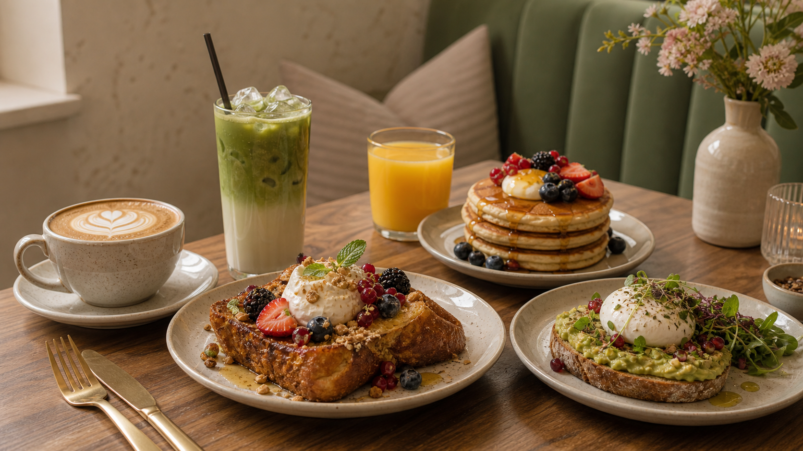
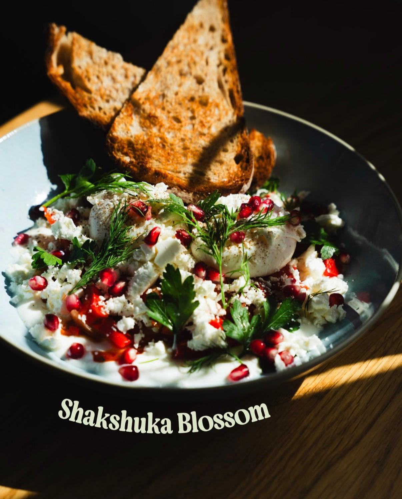
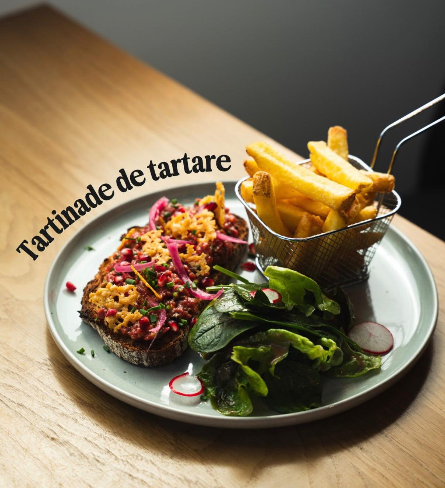

Formule petit-déjeuner
Café, jus d’orange, mini granola bowl, croissant ou pâtisserie maison.
15.-Brunch & lunch
Le brunch Projet a ce petit pouvoir: il transforme un café rapide en rendez-vous, une faim simple en vraie envie, un dimanche en souvenir.



Le bon réflexe